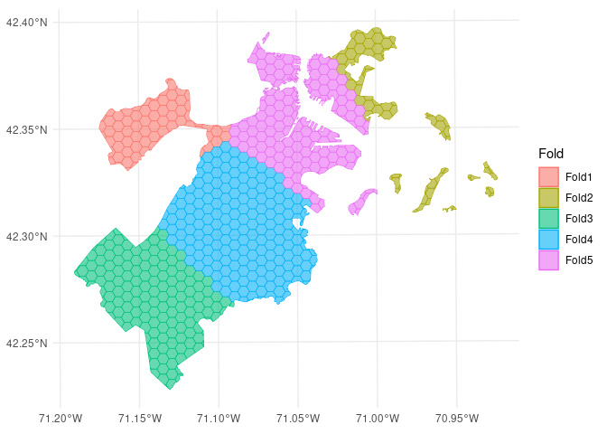
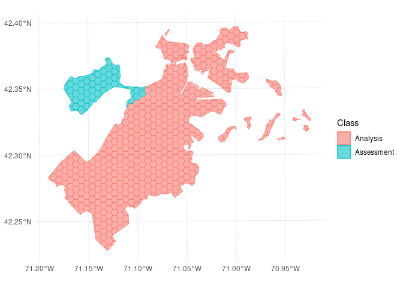

Introduction
The goal of spatialsample is to provide functions and classes for spatial resampling to use with rsample, including:
- spatial clustering cross-validation
- spatial block cross-validation
- spatially buffered cross-validation
- leave-location-out cross-validation
Like rsample, spatialsample provides building blocks for creating and analyzing resamples of a spatial data set but does not include code for modeling or computing statistics. The resampled data sets created by spatialsample are efficient and do not have much memory overhead.
Installation
You can install the released version of spatialsample from CRAN with:
install.packages("spatialsample")And the development version from GitHub with:
# install.packages("devtools")
devtools::install_github("tidymodels/spatialsample")Example
The most straightforward spatial resampling strategy is spatial_clustering_cv(), which uses k-means clustering to identify cross-validation folds:
library(spatialsample)
set.seed(1234)
folds <- spatial_clustering_cv(boston_canopy, v = 5)
folds
#> # 5-fold spatial cross-validation
#> # A tibble: 5 × 2
#> splits id
#> <list> <chr>
#> 1 <split [600/82]> Fold1
#> 2 <split [589/93]> Fold2
#> 3 <split [524/158]> Fold3
#> 4 <split [497/185]> Fold4
#> 5 <split [518/164]> Fold5In this example, the boston_canopy data on tree cover in Boston, MA is resampled with v = 5; notice that the resulting partitions do not contain an equal number of observations.
In addition to resampling algorithms, spatialsample provides methods to visualize resamples using ggplot2 through the autoplot() function:
autoplot(folds)
We can use the same function to visualize each fold separately:

So far, we’ve only scratched the surface of the functionality spatialsample provides. For more information, check out the Getting Started documentation!
Contributing
This project is released with a Contributor Code of Conduct. By contributing to this project, you agree to abide by its terms.
For questions and discussions about tidymodels packages, modeling, and machine learning, please post on RStudio Community.
If you think you have encountered a bug, please submit an issue.
Either way, learn how to create and share a reprex (a minimal, reproducible example), to clearly communicate about your code.
Check out further details on contributing guidelines for tidymodels packages and how to get help.